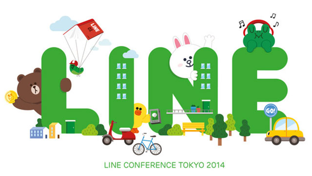
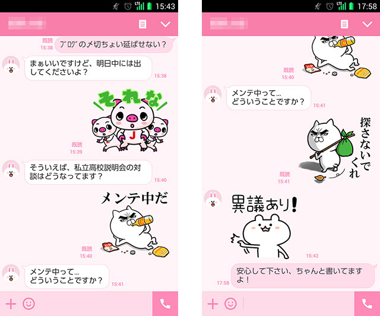

画像出典：LINE公式ブログ http://official-blog.line.me/ja/archives/14198194.html
これも時代か
つい先日、YAHOO! ニュースで、「LINEがいじめを防止するためのスタンプを募集する」といった記事を目にしました。
LINEは13日、青少年のネット上でのトラブル防止活動の一環として、「LINE“おたすけスタンプ”」の制作を発表した。中高生が応募したスタンプ案をもとに制作し、2016年春頃にLINE上で無料配布する方針だ。
出典：Yahoo!ニュース http://headlines.yahoo.co.jp/hl?a=20151013-00000010-rbb-sci
悪口が飛び交い始めたら、そのスタンプで場を和ませるという。
要するに‘空気を変える’役割をスタンプに持たせると。
果たしてそれが効果的に使用されるかというと、何とも言い難いですよね。
おそらくこの話は中高生などがグループでチャットすることを前提としたものでしょう。
そうなると、もし険悪なムードの中で不意にとぼけたスタンプを送信して仲裁を買って出るようなことをしたら、それこそその仲裁者が「空気の読めないヤツ」ということで攻撃の的になってしまう可能性もあるわけですよ。
この‘空気’に過敏になる傾向も現代特有のものでしょうね。
よく、LINEなどの会話に参加しないと翌日にグループ内の会話に入っていけなくて勉強が手につかないとか、仲間外れにされるという話を聞きます。
コミュニケーションを深めるためのツールが、逆に人間関係の不和を誘発する原因になるというのは、何とも皮肉な…。
とはいえ、一斉に連絡したいときなどは非常に便利なことこの上ないのは確かで、実は私自身もLINEをやっています。
と言っても多くの場合、個人的なやりとりをEメールでするよりも手軽だからそうしているのですが。
十数人単位のグループでは中学のときの同級生のみです。
最初はそういうのは煩わしいなと思ったのですが、仲間の近況をすぐに知ることができたり、飲み会の出欠などをするのに効率的だし、まぁいいかなと。
で、登録するときに、
「最初に言っとくけど、俺は基本的にコメントしないから」
と、断りましたが、そこは皆さん大人ですから既読無視バリバリでもOKということで、大事な連絡のときだけコメントしたりしています。
要するに、本当に気の置けない関係の仲間とだけグループでLINEをするか、スタンプ込みで楽しむために個人的にやりとりするのがベストですね。
仕事には適さない。されど…
仕事上の連絡にLINEを使用することの是非が議論されたりします。
私は仕事関係では電話かメール。
機能的には問題ないのですが（いや、むしろ読んだかどうかがすぐにわかる分機能的かも）、オフィシャルな雰囲気にはならない。
つまり空気を読むという意味でLINEは使わないわけです。
しかし、あえて意図的に使うときもあります。
（※以下、弊社HP支配人とのやりとり例）

ここには高度な戦略が隠されています。
ブログの締め切りをエサに、一番気になっている対談について期日をどれぐらい引っ張れるのかを探ろうということです。
案の定、支配人がすぐに核心に迫ってきたので、すかさず「俺としてはちょっと忙しいから後回しにしたいんだけど～」的なスタンプで切り替えし様子を見たワケです。
まあ、でもちょっとダメそうな空気だったんで、夜中にでもやろっかな、と（笑）。